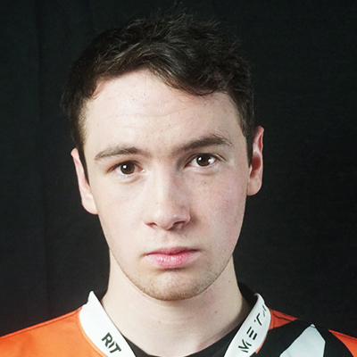

About Me
My name is Aidan Roberts. I'm 19 years old and majoring in Game Design & Development at Rochester Institute of Technology. I have always had a passion for video games, whether it's playing casually or professionally, or even creating them.
Overwatch
I am on the D1 Overwatch team at RIT as a Substitute for the Tank role. As a Tank, it is my job to lead my team and shot-call more than everyone else. I have to know the ins and outs of the game, as well as games in general, at an extremely high level. I understand game balance and am good with giving feedback because of this.
